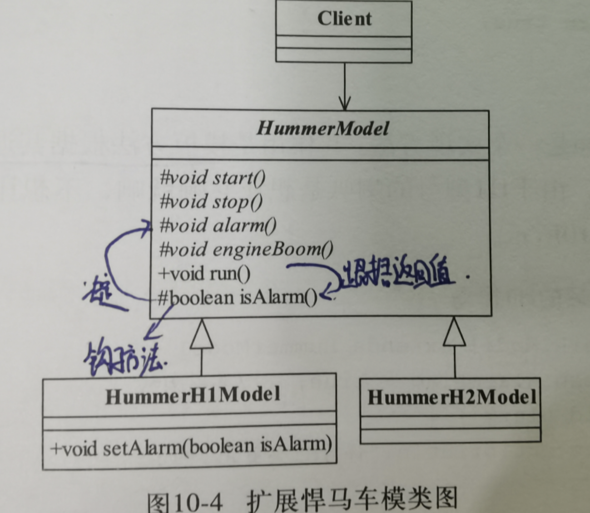
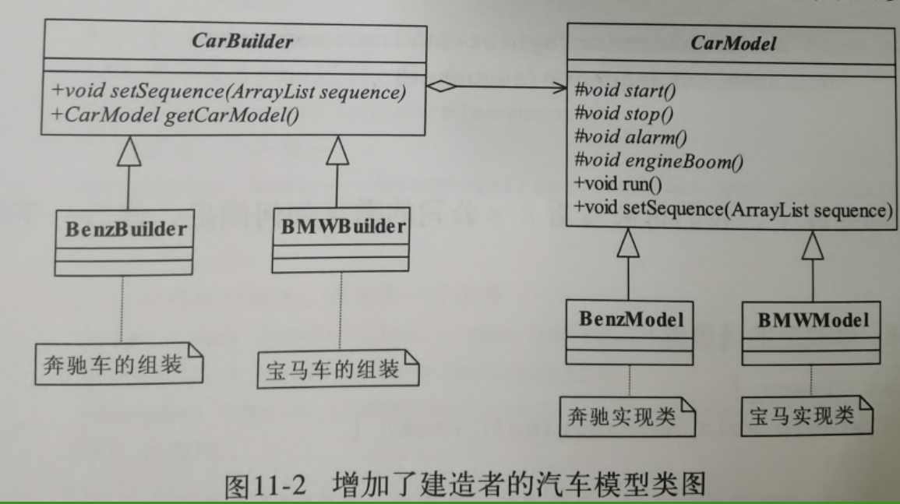
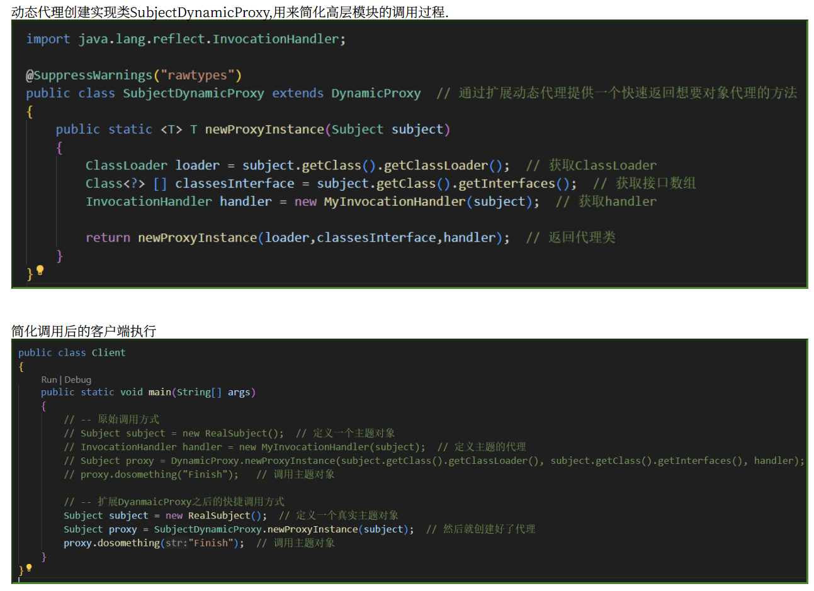
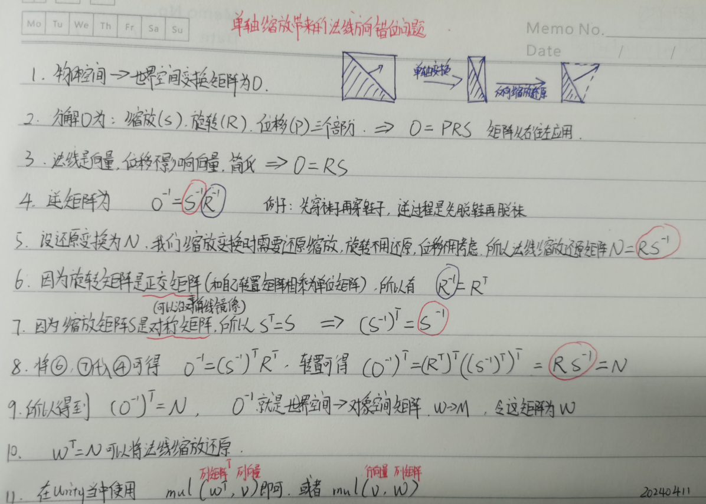
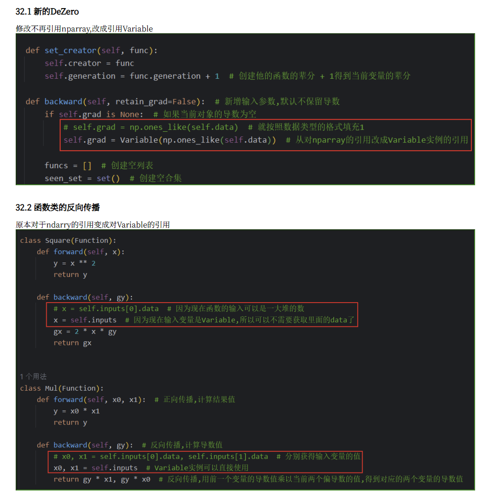

1.英语学习
当主语为第三人称单数或单数形式的名词或代词 he/she/it/your brother.....需要三单形式
be动词 is am,助动词does,实意动词改三单形式,例如watch->watches
一般过去时:
1.be动词的变化根据人称和数来确定:
1.1当主语为第一人称单数I(我)或第三人称单数he/she/it(他/她/它)be动词变成was
I was at home yesterday.
翻译:我昨天在家
1.2当主语为第一人称复数we(我们),第二人称单复数you(你/你们),第三人称复数they(他们/她们/它们)be动词变成were.
You were right about that.
翻译:关于那件事你说对了
2.其他实意动词
当主语为第三人称单数或单数形式的名词或代词就需要动词改成三单形态加s或者es
例如:like->likes,have->has,watch->watches
将来:
Dad can take us to school tomorrow.
翻译:爸爸明天可以带我们去学校
语法点:情态动词can+动词原型take表将来
普通疑问句:
1.动词是be动词,助动词或情态动词,将这些词提前到句首
例如:Were you in London last week?
翻译:你上周在伦敦吗?
2.句中谓语动词为实义动词,需要借助do/does/did提前到句首,原本的动词使用原型.
三单形式用Does,其他都是do,如果是过去式那就统一都是did.
特殊疑问句:
语法点:疑问副词,when(何时),where(哪里),why(为什么),How(如何)
用法:放在句首表示对特定问题的发问
Where will you live next year?
翻译:你明年会住在哪里?
语法点:There be句型,基本结构为“There be + 名词 + 地点/时间状语”，用于描述某处存在某物或某人
1.主谓一致
2.1主语为单数名词或不可数名词,be动词用is
There is some water in the cup.
翻译:被子里有一些水
2.2主语为复数名词,be动词用are
There are many apples on the tree.
翻译:在树上有很多苹果.
2.计算机图形学--计算机图形学原理(OpenGL)
直接定义顶点坐标

使用顶点索引来定义坐标
1.概念
概念:像素图(pixmap)
定义:一个彩色像素阵列称为一个像素图.
特性:阵列中每一个颜色值映射到一个或多个屏幕像素位置,像素阵列的参数通常包含指向颜色矩阵的指针,矩阵的大小,及其将要影响的屏幕区域.
概念:位图bitmap/遮罩或掩膜mask
定义:简化矩阵,将矩阵中的每一像素位赋值为0或1,用以表示一个像素是否被赋予预定的颜色.
2.实现
2.1绘制位图
2.2绘制像素图
1.概念
概念:字样(typeface)-一组字符的完整设计风格
概念:字体(font)-早先指的是一组按照特定尺寸和格式的模板字符样式(就像活字印刷的字块)
有衬线(serif)/无衬线(sans serif)
单一宽度(monospace)/比例宽度(proportional)
概念:位图字体(bitmap font)/光栅字体(raster font) -使用矩形网格图案(位图)
概念:轮廓字体(outline font)/笔划字体(stroke font)-使用直线段和曲线段定义轮廓形状(矢量图)
概念:标记符号(markersymbol)/多点标记(polymarker)-一些特殊的标准字符,点,圆.十字等等
2.函数
GLUT提供:
glutBitmapCharacter(font, character)可以显示GLUT位图字符
glutStrokeCharacter(font,character)可以显示轮廓字体
把对象描述成一个命名的语句序列并存储起来既方便又高效.
在OpenGL当中使用称为显示表(display list)的结构来实现这一点.从而可以通过不同的显示操作来多次引用该表
窗口刷新函数,可以拖动改变窗口尺寸了
3.计算机学习-设计模式(Java)
例子引入:
使用抽象工厂实现类工厂作为一个维度的划分
Human接口的抽象类作为另外一个维度的划分
从而实现了对产品的两个维度的划分.
正式定义:
Provide an interface for creating families of related or dependent objects without specifying their concrete classes.
翻译:为创建一组相关或互相依赖的对象提供一个接口,而且无须指定他们的具体类.
示例:两个产品,两个品牌工厂,对应了四个产品的工厂创建
例子引入:
模板方法通过将共同的部分给抽取出来,统一设置从而实现重复代码的复用,降低出现问题的概率
正式定义:
定义:Define the skeleton of an algorithm in an operation,deferring some steps to subclasses.Template Method lets subclasses redefine certain seteps of an algorithm without changing the algorithm's structure.
翻译:定义一个操作中的算法框架,将一些步骤延迟到子类中,使得子类可以不改变一个算法的结构既可以重定义该算法的某些特定步骤.
抽象模板类:定义算法框架(模板方法),把步骤(基本方法)延迟到子类(具体模板类)实现.
代码处理:核心逻辑,一般不允许修改,使用final关键字
具体模板类:实现这些步骤方法(基本方法),不同的步骤方法让模板方法调用有不同的结果.
代码处理:这里的方法是不公开的,但是抽象模板类需要知道,所以不能是private而是protected.
扩展:
抽象类:在模板方法中设置一个新的钩子方法(返回布尔值的方法)来决定某个基本方法是否执行
实现类:可以通过覆盖钩子方法的返回值来控制抽象类中的模板方法的执行.当然也可以覆盖基本方法来控制基本方法的执行方式.

例子引入:
在抽象类当中准备了一个设置执行顺序的方法,
让子类可以设置不同的执行顺序,这个时候客户需要分别设置不同汽车实例的制造顺序
把这个设置顺序的部分给抽离出来,让专门的建造者类负责设置,这个时候客户需要通过建造者来创建汽车实例

再把一些预设的方案给到导演类,从而实现更加简单的调用,这个时候客户可以直接让导演类创造常见型号的汽车实例,而不关心细节了
正式定义:
建造者模式BuIlder Pattern也叫作生成器模式 定义:Separate the construction of a complex object from its representation so that the same construction process can create different representations. 翻译:将一个复杂对象的构建与它的表示分离,使得同样的构建过程可以创建不同的表示.
Product产品类:通常包含模板方法和基本方法.
Builder抽象建造者:规范产品的组件,一般由子类实现
ConcreteBuilder具体建造者:实现抽象方法,组装并返回一个对象.
Director导演类:负责制备一些预设,方便调用.
例子引入:
定义IGamePlayer接口类,确定游戏玩家需要执行的逻辑
实现接口的就是GamePlayer对象了
创建了一个新的GamePlayerProxy对象来负责委托操作给GamePlayer执行.,客户现在不需要直接操作游戏实例了

正式定义:
代理模式(Proxy Pattern) 定义:Provide a surrogate or placeholder for another object to control access to it. 翻译:为其他对象提供一种代理以控制对这个对象的访问.
ISubject主题接口,明确要实现哪些业务逻辑
实现对象RealSubject,实现了接口定义的方法
Proxy代理对象,代理对象代替指定的对象执行逻辑
扩展:
普通代理:客户只能访问代理角色,而不能访问真实角色.
GamePlayer实例对象,判断传入的对象不为空,才创建,也可以进行其他的判断限制创建条件
GamePlayerProxy实例对象,它负责了创建GamePlayer对象,所以客户需要关心的东西更少了.
客户对象需要知道的进一步减少,现在只需要知道给代理对象一个名字就可以创建游戏对象,然后代理可以执行登录,打怪,升级,在暗中这一切都被委托给了GamePlayer执行
强制代理:客户访问真实对象返回的是代理.必须通过代理进行访问.
IGamePlayer接口类要求增加一个可以获取代理的方法
GamePlayer游戏对象存储代理对象,实现接口的getProxy方法可以返回当前对象的代理对象.接口方法的实现,要求必须是通过代理.
代理对象就是把所有的执行都委托给代理了的游戏对象.唯一不同的就是代理本身没有代理所以返回自身.
客户端对象,现在我们必须通过游戏对象指定的代理才能访问游戏对象.
个性代理:要求:在实现游戏对象功能基础上新增了代理的收费功能
新增了接口IProxy来约束代练的功能
代练对象GamePlayerProxy实现了这个新的计费功能,这个功能不是游戏对象有的,而是代练独有的
动态代理:要求:在实现阶段不关心谁代理,在运行阶段才指定代理哪一个对象.
代理对象GamePlayIH现在实现InvocationHandler接口,这个接口自动把委托的事情做了
动态代理对象直接绕过了创建代理这件事情,将主题这部分和代理给分开了,主题制作自己的逻辑,先完全不用考虑代理的事情,后期再由动态代理自动处理这个事情.
标准动态代理:两条独立发展的路线,动态代理实现代理的职责,业务逻辑Subject实现相关的逻辑功能,二者之间没有必然的相互耦合关系.
主题对象Subject定义业务逻辑框架
真实主题对象RealSubject实现接口定义的业务逻辑
动态代理实现类MyInvocationHandler将所有通过动态代理实现的方法全部通过Invoke方法调用.
DynamciProxy泛型动态代理,把动态代理的实现部分给封装起来,方便其他地方调用产生动态代理
通知接口IAdvice,也是独立的,限制通知的方法
通知实现类BeforeAdvice,实现一个通知

简化动态代理:动态代理创建实现类

动态代理的调用逻辑是代理通过InvocationHandler自动实现空的Invoke方法,然后再把这个方法委托给Subject对象来实现.
例子引入:
AdvTemplate广告信模板类,设定通用的部分
Mail邮箱类,设定了一系列的属性,方便读取各种模板属性来创建邮件,
Client客户端类则通过Main调用模板类来修改一些不同的部分来创建不同的个性化邮件
为了可以执行多线程,Mail类实现了克隆接口,然后实现了对应的方法,实现不再实例引用,从而避免互相影响
Client客户端类每次调用克隆方法创建新的对象,这样就可以不怕多线程了
这种不通过new关键字来产生一个新的对象,而是通过对象复制来实现的模式就叫做原型模式
正式定义:
Specify the kinds of objects to create using a prototypical instance,and create new objects by copying this prototype.
翻译:用原型实例指定创建对象的种类,并且通过拷贝这些原型创建新的对象
Java当中的Cloneable只是一个标识接口,里面没有任何方法,单纯是一个标记,JVM只会对具有这个标记的对象进行拷贝,实际上我们覆盖的事所有类的祖宗Object类的clone方法
注意事项:
1.构造函数不会被执行
原理是因为clone方法是直接从堆内存复制一份二进制重新分配一个内存块,所以自然就不会执行构造函数了
2.浅拷贝和深拷贝
clone对于内部的数组,引用对象等都不拷贝,只是拷贝地址,这种拷贝就叫做浅拷贝.(成员变量且是可变的引用对象)
深拷贝则是对于所有变量的完全拷贝,需要在clone方法里面独立实现,例如thing.arrayList=(ArrayList泛型String)this.arrayList.clone();这样就会进入到数组,再克隆,而不是克隆浅层的引用.
3.final和clone
定义了final就不允许动内存中的对象了,这自然是无法克隆的.
4.Unity学习-HLSL学习
模型空间M->世界空间W->观察空间V->裁切空间P
Unity提供的变换矩阵
Background和Overlay一个最先绘制,一个最后绘制.
Geometry和Alpha Test都是按照从近到远绘制,这叫做反向画家算法,先绘制近的物体,再绘制远处不被遮挡的对象.
Transparent按照从远到近的顺序绘制,这叫做画家算法,从最远的物体往最近的绘制,前面的物体会覆盖融合(混合)后面的物体.

深度测试,深度写入,深度裁切与Early-z
根据遮挡关系,距离近的物体应该被覆盖在距离远的物体上,如果是规则的,不互相穿插的物体,只需要根据物体的中心点排序即可.
但是通常模型都是复杂的,所以以一个整体进行排序就不合适了,因此将度量的单位从模型升级成了片元,根据片元距离摄像机的距离来判断渲染顺序,这个概念就是深度depth(片元距离摄像机的距离)
在我们将模型转换到裁切空间之后,为了提高计算速度,减少对于不同设备的考虑,GPU会进行归一化操作,将裁切空间变化到一个标准立方体当中,这个空间称为归一化设备坐标系Normalized Device Coordinate,NDC
深度缓冲区:这个时候我们只需要对比当前片元与上一个片元的深度值,就可以知道是否可见,所以需要一个存储深度信息的池,这个池就是深度缓冲区z-buffer.
深度测试:若当前片元的深度值小于池中的深度值,说明离摄像机更近,所以应该渲染当前这个片元.否则就丢弃当前片元.这个过程就叫做深度测试Z-Test
深度写入:这个将新的深度值写入深度缓冲区的过程称之为深度写入Z-Write
深度裁切:通过深度测试对片元进行选取或丢弃的过程称之为深度裁切.Z-Clip
相关设置值
ColorMask的设置
模板值相关操作可控部分
1.模板值设定,读取和写入遮罩
2.比较方式
3.缓冲区模板值的处理
比较操作
1.法线
概念:平滑着色(Smooth Shading),顶点法线为其连接的所有平面法线的加权平均值
概念:平面着色(Flat Shading):顶点的发现为其所连接平面的法线.
对应于DCC软件中设置的软硬边或者光滑组
1.光滑组:同一光滑组的顶点是按照平滑着色的,不同的按照平面着色.
2.软硬边:硬边表示需要断开是平面着色,软边表示需要光滑是平滑着色
不均匀缩放的危害
当我们对物体进行不均匀缩放,会带来法线位置的偏移,为了解决这个问题,我们需要反向缩放还原

2.顶点色:DCC软件中指定好的一个值,可以通过COLOR语义读取.
5.计算机学习-深度学习入门(Python)
1.泰勒展开
Sin函数实现

泰勒展开理论
泰勒展开实现,逼近Sin测试
2.梯度下降
Rosenbrock函数实现
形状复杂的函数,其最大值可能不在梯度指示的方向上,不过从局部来看,梯度表示函数的输出值最大的方向.重复向梯度方向移动一定距离,然后再次求梯度的过程,可以帮助我们逐渐接近目标位置(最大值或最小值),这就是梯度算法
给一个好的初始值,再使用梯度算法能帮我们高效的找到目标值.
我们的目标是找到香蕉函数的最小值,通过梯度下降算法我们就找到了最小值
3.牛顿迭代法
牛顿迭代法理论

效率:梯度下降只利用到了一阶导数信息来优化,而牛顿法利用了一阶和二阶导数信息来优化.仅仅7次就收敛了
原始状态:
执行Y=sin(x)的时候,SIn类的forwaard方法执行,计算图被创建,Varibale的实例变量data被赋值.
执行反向传播的时候,Sin类的backawrd方法被调用,Variable的示例变量grad被赋值.
创建反向传播的计算图的方法
连接是在Variable变量进行正向传播的过程中创建的.这意味着如果我们在函数的backward方法中使用Variable实例替代ndarry实例就业会创建计算连接,为此我们需要将导数(梯度)保存为Variable实例.
图中展示了Variable的变化
左图是以前的,Variable类的grad引用ndarry实例对象.
有图让grad变成导数Variable类gx的引用.
从引用转到对变量的引用

控制反向传播
实现自动计算的牛顿迭代法
Sin和Cos函数的实现-可以计算二阶导的
Tanh函数的实现
8.Unity学习_Unity3D游戏开发(C#)
7.3.7 动画混合
代码逻辑:通过将两个动画关联到混合Playable中,然后统一交给Playable播放,只需要在Update()中通过调用SetInputWeight就可以设置每个动画混合的权重实现混合动画了.
7.3.8 老版动画
使用Animation配合老版本动画文件
7.3.9 Simple Animation组件
使用SimpleAnimation组件适配新老版动画

.length获取片段时长
.time设置播放时间
通过CrossFade过渡动画,Blend混合动画,GetState设置权重,Rewind重新播放,speed属性设置播放速度

7.3.12 Playable组件
导入Assert文件夹,通过主菜单栏Windows_PlayableGraph Visualizer打开,当运行的时候会自动读取场景中的PlayableGraph实例
音频混合,和动画是一样的逻辑,创建混合器,把资源链接到混合器,设置混合比率,链接到输出,播放.
7.3.14 模型换装
三种模型的跟换
1.换皮肤,直接换材质球就可以了
2.换网格信息(没有动画),直接换Mesh就可以了
3.蒙皮骨骼(带动画),需要换骨骼,根结点,材质球,网格
7.4.1 角色控制器
7.4.2 碰撞体
7.4.3 Rigidbody组件
7.4.4 碰撞事件
7.4.5 布娃娃系统
7.4.6 布料系统
7.4.7 其他
7.5.1 实体输入事件
7.5.2 虚拟输入事件
7.5.3 鼠标位置
7.5.4 点选模型
7.5.5 通过点击控制移动
7.5.6 射线
7.6.1 控制角色移动
7.6.2 摄像机跟随

7.6.3 插值移动
7.6.4 约束条件
9.1 Excel
9.2 SQLite

9.3 JSON
9.4 文件的读取和写入
PlayerPrefs存储路径
10.美术学习-CG造型基础与创作
临摹的作用
1.建立现实的心理预期:首先需要能顺利完成临摹,后面创作才会不受到限制
2.明确临摹的目的:临摹主要用于养成整体观察和对比的习惯,掌握打型和选色的技能.
3.临摹与创作尝试并行:学习绘画的本质是想要表达自己的感觉,而不是临摹机器,所以临摹和创作并行.
结构概括的意义
结构概括可以被应用在对物体的观察上.在框架结构模式下,我们更容易把握物体的形态特征,也更容易看出物体的形成规律.
1.基本几何体,球体,圆柱,方块,圆锥及其延伸体
2.关键转折:影响线条整体趋势,转折较为剧烈的点(用数学的说法就是切线方向变化剧烈的点,那就是一阶导数变化大的点,转折点)
3.典型表面:概括物体表面的趋势
透视是人类普遍的视觉经验,我们需要通过正确的透视表达,使创作者和观众对作品的结构认知趋向一致
直线的透视投影还是直线(透视后依然是直线),但对于包含投影中心点的直线束,其透视投影无定义(汇聚成的一个点,也就是灭点).
1.术语
2.透视类型
一点透视
二点透视
三点透视
五点透视
3.透视盒子与点定位
使用一个方块进行包裹,得到透视关系,然后绘制变形后的原来对象
4.绘制流程总结
A.按照你所期望的观察角度画出视平线
B.确定方块中离你最近的那条竖边,按你期望的视角估算两个消失点的位置,画出离你最近的四条平行于地面的边,这些边的延长线汇聚于两边的消失点上.
C.目测估算要绘制方块的长.宽,高比例,在四条已经画出的边上做标记,然后连接他们,(注意上面也是有一个消失点的)
D.画出方块远侧的四条平行于地面的边,它们的延长线应该也聚集于两边的消失点上
E.连接方块远侧四条边交叉形成的两个交点
F.去除多余的线,绘制完成
4.绘制练习